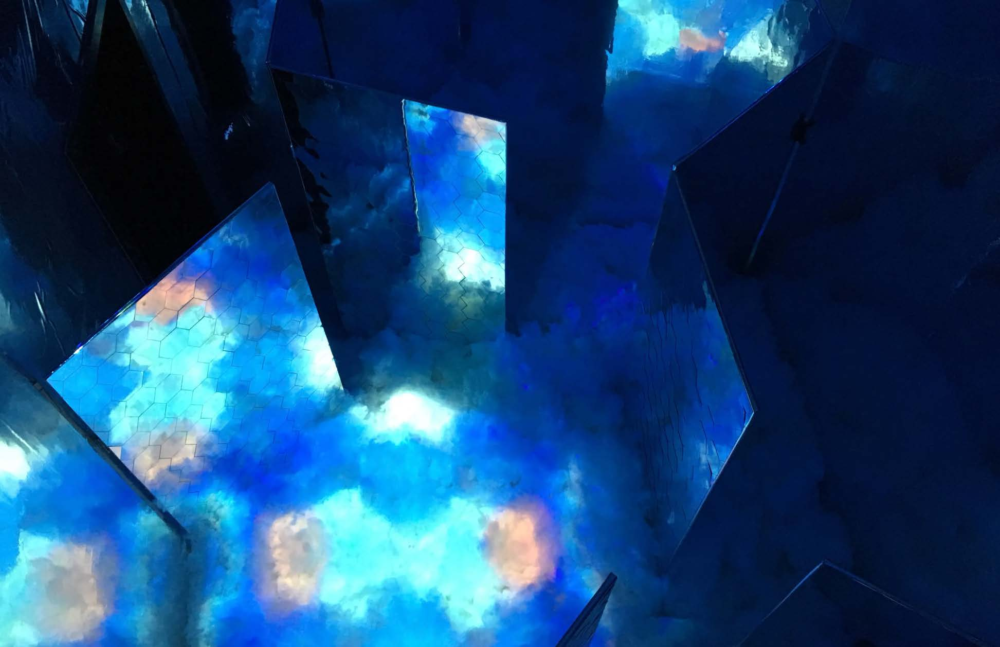
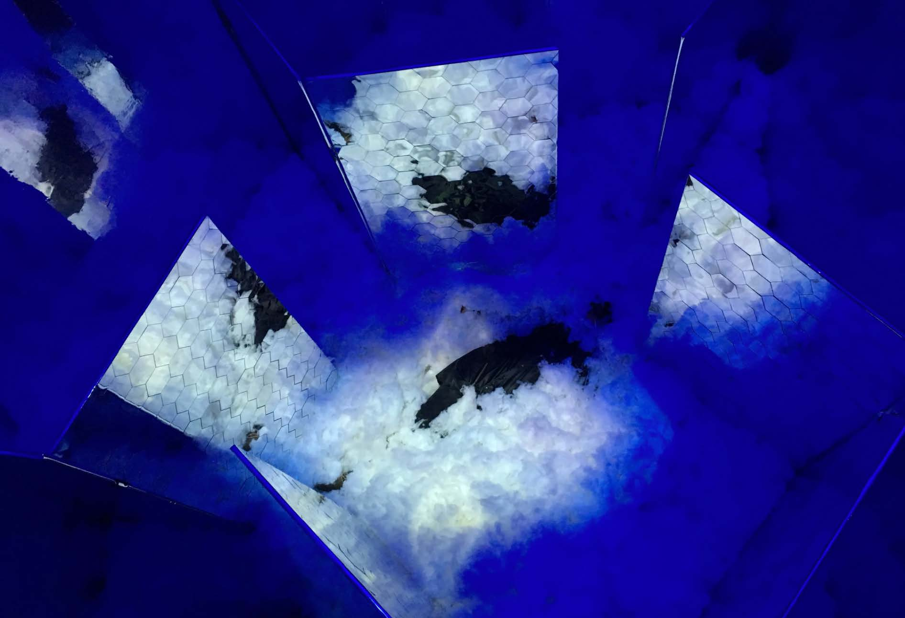

What Kind of World Flows From Beehive?
What Kind of World Flows From Beehive?
Interactive Art Installation
2018/10
Transcultural Collaboration: Spoken/Unspoken
Ming Contemporary Art Museum, Shanghai
The crowded and small personal space of Hong Kong apartments affects the living habits of the people living in this city. We found that crowded personal space subtly influences the behaviour and thinking of the individual, and eventually becomes an important factor impacting social solidification.
This work aims to use (the notion of) the beehive to reveal the sense of oppression caused by crowded space, as well as the impact on physical, psychological and spiritual parts, while also raising awareness of people living in such spaces. We aim to explore behaviour and emotions, which are hidden or neglected and ask ourselves: What kind of world overflows from the beehive?
Collaborated with Peitao Chen, Xiaoli Liu, Mei Ting Spencer Poon


